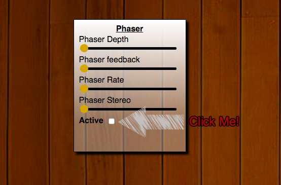
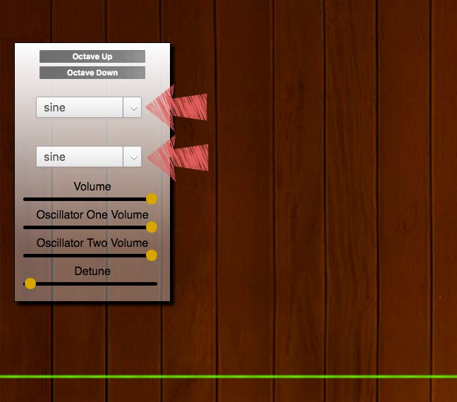

Tutorial
Welcome to mySynth! Press the next arrow for a brief explanation of how you can fully enjoy all of mySynth's capabilities.
The letters on the bottom of the display are the keyboard keys used to activate each note. The respective note which will be played is listed at the top of the display. Up to 5 notes playable at a time!
Each effect can be activated and deactivated with the checkbox on the respective effect box. Once activated experiment with each setting to your hearts content!
Waveforms can be changed with with the two dropdowns on the left side of your screen. Different waveforms allow for different tonalities and greatly opens up possibilties for different sounds.
If you dont know what everything is, thats OK! mySynth is all about learning and experimentation. There are no wrong synth sounds!
Attack
Decay
Sustain